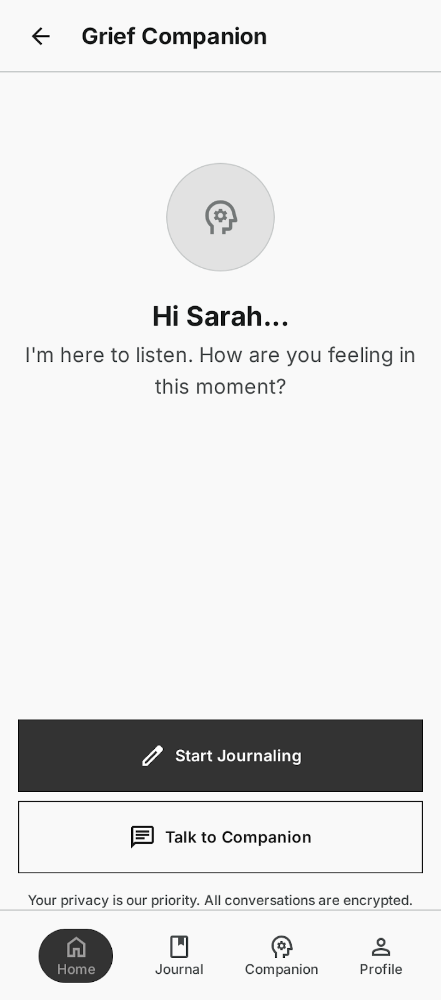
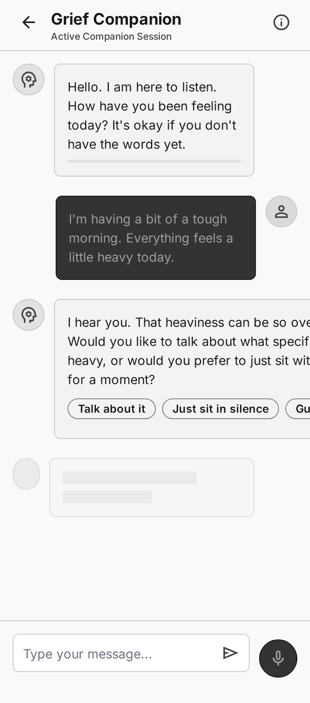
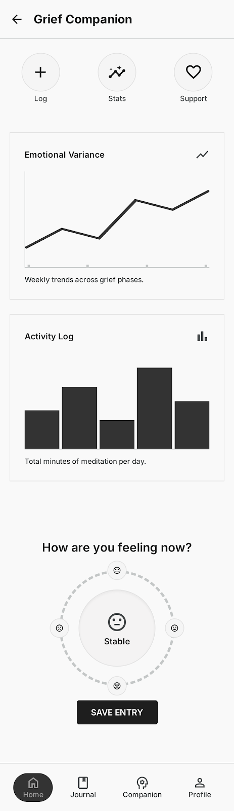
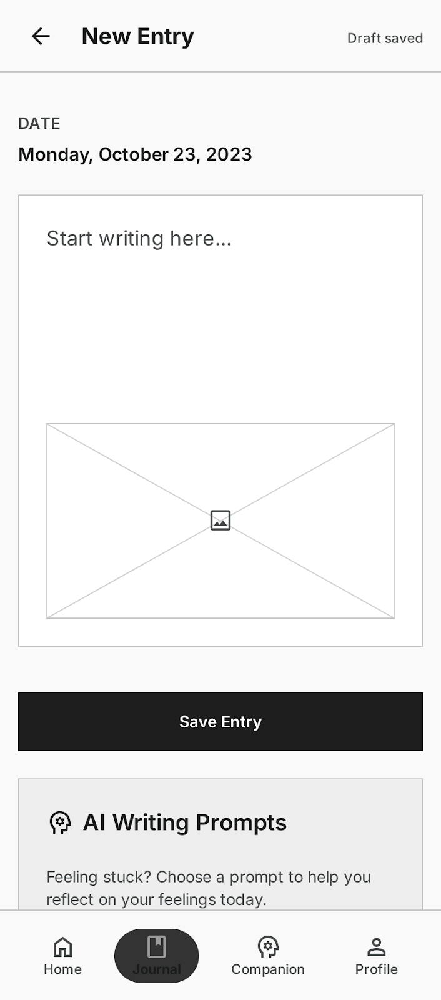
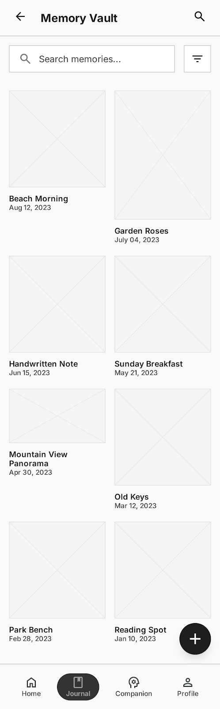
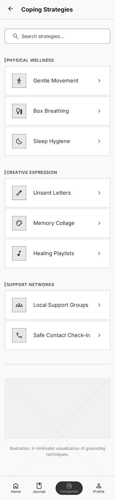
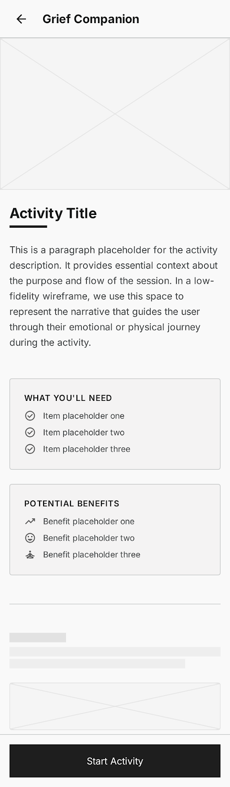

An AI-native mobile app providing compassionate, 24/7 conversational support for people navigating loss and bereavement
Grief is isolating, unpredictable, and often strikes at 3am — when therapy, support groups, and patient friends aren't available. In my survey of 64 people in grief-support forums, 73% reported feeling alone in their grief, yet only 15% had sought professional help.
Don't try to fix grief — hold space for it. An AI companion whose entire value is availability and judgment-free listening: proactive check-ins, guided journaling, and a secure memory vault, all built on the insight that grief isn't linear and support needs fluctuate daily.
I interviewed 9 people at various stages of grief (1 month to 5 years post-loss), surveyed 64 members of grief-support forums, and consulted 4 grief counselors. The goal wasn't a feature list — it was to find where existing support structurally fails.
Source note: unless a citation says otherwise, every statistic in this case study comes from this primary research — the 64-person survey, 9 interviews, and my own prototype and beta testing sessions.
"I just needed someone to listen without judgment, at any hour."
Before polish, I wireframed the core flows in gray boxes to test whether the structure of the experience matched what grief actually needs. Two of these were cut — and the cuts were the most strategic decisions of the project.







Every screen answers to one principle — adaptive empathy: meet the user where they are emotionally, not where they "should" be. Some days that's distraction; some days it's crying about your dad at 2am. The app follows the user's lead.


Research showed people deep in grief lack the energy to seek help — so the app reaches out first. A gentle "checking in on you" removes the initiative barrier that passive apps ignore.


The AI uses grief-counseling validation techniques: reflect the emotion first, offer choices ("talk about it, or would distraction help?"), never rush to solutions. It's designed to listen, not to fix.


A private, encrypted home for what's too precious to post publicly — photos, voice memos, recipes. No likes, no comments, no engagement metrics: this space serves the individual, not a feed.


A blank page is overwhelming when your brain is foggy with grief. AI prompts personalized to the relationship and stage of loss give users a starting point — with a skip option so nothing forces processing.
The same strategy shaped the craft details: a deep purple palette (introspective, not medical-blue or cheery-yellow), 44px minimum touch targets for shaky hands, voice input for low-energy moments, and slow 300-400ms transitions that match the emotional pace.
The AI's voice was its own design discipline. I rewrote the core responses more than 20 times against grief-counseling guidance until the tone consistently landed as warm, unhurried, and honest about being an AI.
Putting conversational AI in front of emotionally vulnerable people demands guardrails before polish. I established these with grief counselors at the start, not the end:
Hypothesis: people in active grief will open up to an AI companion if it validates feelings instead of fixing them, and never forces processing.
Participants were actively grieving; compensation was a donation to a grief charity of their choice. Each 60-minute session: trust-building, think-aloud prototype use, and an emotional check-out.
Hypothesis: the Round 1 fixes would translate into sustained, repeat use outside a moderated session — the real test of a companion product.
Feature usage confirmed the strategic bets in order: conversational support (92% of participants), Memory Vault (85%), journal prompts (71%), proactive check-ins (68%).
"This app gave me permission to still be grieving. My friends had moved on, but the AI was there at 2am when I couldn't sleep and just needed to talk about my dad."